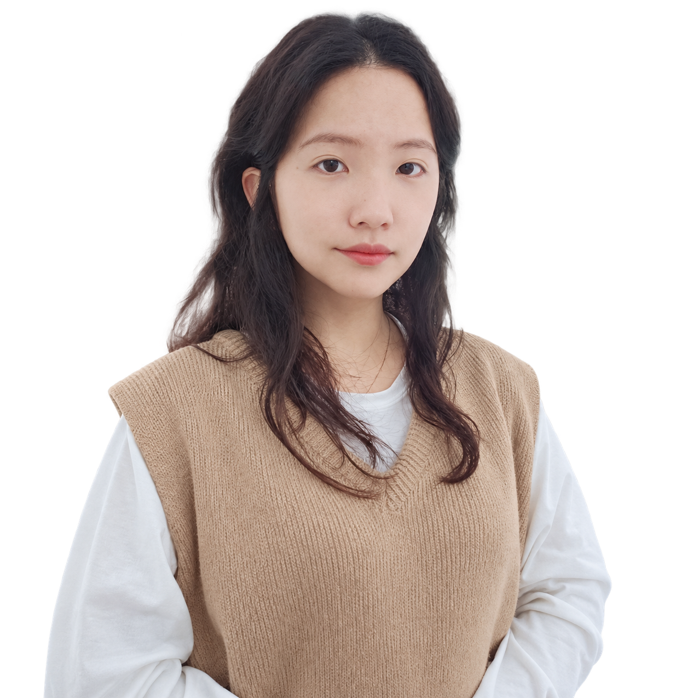

2024.06 — 2025.09
1년 4개월㈜에스엘바이오텍
디자인팀 · 대리
- 자사몰·스토어팜·이커머스 프로모션, 행사 배너 및 썸네일 제작
- 소형가전·건강식품 상세페이지와 제품 연출 이미지 합성, GIF 제작
- 인스타그램·페이스북·유튜브 피드 및 SNS 카드뉴스 제작
- 네이버 라이브쇼핑 피켓, 와블러·포스터·현수막 디자인
LEE HYE RIM
프로모션 · 상세페이지 · 온라인 콘텐츠 디자인
7년간의 웹디자인 실무 경험을 바탕으로 작업합니다.

ABOUT
안녕하세요. 다양한 브랜드와 커머스 환경에서 실무 경험을 쌓아온 7년 차 웹디자이너 이혜림입니다.
7년간 뷰티, 반려동물, 생활용품, 소형가전, 건강식품 등 다양한 제품과 브랜드를 경험했습니다. 자사몰과 이커머스를 중심으로 프로모션, 상세페이지, 배너, 광고 이미지, SNS 콘텐츠를 제작해왔습니다.
주력 분야는 프로모션과 제품 상세페이지 디자인입니다. 프로모션에서는 고객의 시선을 끌고 행사 내용과 혜택을 빠르게 전달할 수 있도록 핵심 메시지와 시각적 우선순위를 정리합니다. 상세페이지에서는 제품의 특징과 정보를 쉽게 이해할 수 있도록 브랜드에 맞는 톤앤매너와 자연스러운 콘텐츠 흐름을 구성합니다.
협업할 때는 참고 이미지와 작업 방향을 먼저 확인하고, 진행 중인 이미지를 공유하며 기획 담당자와 의견을 맞춥니다. 필요한 자료와 작업 순서를 정리하고, 정해진 내용은 메모하며 관리합니다.
기획전과 행사 배너, 광고 소재, SNS 피드 이미지 제작.
필요한 제품 연출 이미지는 Photoshop으로 합성합니다.
제품의 특징과 기능을 확인하고, 핵심 내용이 자연스럽게 이어지도록 전체 분위기와 정보 흐름을 구성합니다.
Cafe24 자사몰 운영과 HTML·CSS 기반 페이지 수정.
포스터, 현수막, 박람회 부스 등 오프라인 디자인도 제작했습니다.
실무 활용Photoshop의 Adobe Firefly 기능을 실무 디자인 작업에 활용했습니다.
최근 개인 작업개인 프로젝트로 비타민우유 미백크림 상세페이지를 리디자인했습니다. Figma로 페이지를 구성하고, ChatGPT를 콘텐츠 분석과 기획 초안, 제품 연출 이미지 생성에 활용했습니다.
EXPERIENCE
웹디자인 약 7년 · 인테리어 설계 1년 11개월
2024.06 — 2025.09
1년 4개월디자인팀 · 대리
2017.11 — 2023.05
5년 7개월디자인팀 · 대리
2015.01 — 2016.11
1년 11개월설계팀 · 대리
EDUCATION
2017.01 — 2017.06
더조은아카데미학원 · 편집디자인 및 웹 코딩 교육
2012.03 — 2015.02
졸업
CERTIFICATE
2017.03
한국생산성본부